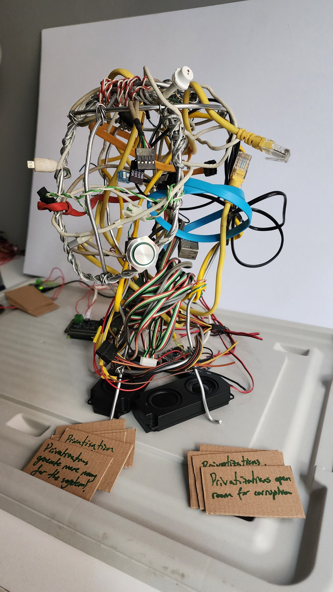

Artist
Signals change
as they travel.
Drawings, interactive systems, reclaimed materials, and the productive distance between what is said and what arrives.
Interactive installation · work in progress · 2026
Kulaktan Kulağa

Kulaktan Kulağa begins with a familiar encounter: one person says something, another hears something slightly different. Three heads made from wire and discarded communication cables turn that gap into a shared instrument.
A visitor presses a button and speaks. The utterance is transcribed, altered through guided phonetic and semantic substitutions, voiced again, and passed from head to head. Earlier outputs can return as new beginnings.
The system treats misunderstanding not as failure but as the ordinary condition of communication. Meaning drifts; authorship becomes distributed across visitors, material, software, and time.
Speak02
Transcribe03
Transform04
Pass it on
A sentence becomes a rumor, a fairy tale, perhaps a legend.
The local system uses speech recognition, a language model, and speech synthesis. The technology remains secondary: it is a tool inside a social and sculptural encounter, not an autonomous subject.
Drawings
Works on paper
Selections from an ongoing drawing practice. Image originals will replace these linked records as the archive grows.